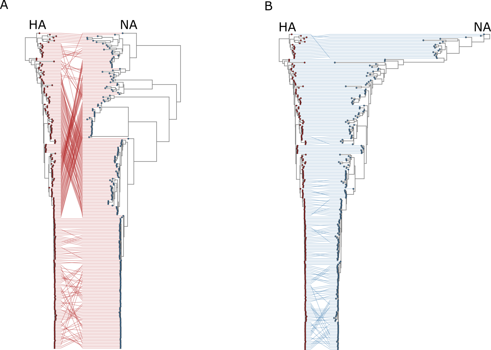

RNA viruses evolve rapidly and generate remarkable genetic diversity. My work focuses on characterizing the genomic architecture, mutation patterns, and evolutionary trajectories of RNA viruses using comparative genomics and phylogenetic analyses. These approaches help reveal mechanisms underlying viral adaptation, host switching, and the emergence of novel viral lineages.
Metagenomic approaches allow the exploration of microbial and viral diversity directly from environmental samples. I apply high-throughput sequencing and bioinformatic pipelines to characterize microbiomes and viromes across diverse ecosystems. This research helps uncover hidden microbial diversity and provides insights into microbial community structure, function, and ecological interactions.
Extreme environments such as deserts, hydrothermal systems, and hypersaline habitats host unique microbial communities adapted to harsh conditions. My research explores how microbial and viral communities evolve and interact in these ecosystems, combining metagenomics, ecological analysis, and comparative genomics to understand the mechanisms of adaptation and survival.
Modern genomics requires powerful computational approaches to analyze large biological datasets. I develop and apply bioinformatic tools for genome analysis, phylogenetics, metagenomics, and evolutionary modeling. These methods enable the discovery of novel genes, viral diversity, and evolutionary patterns across microbial and viral genomes.